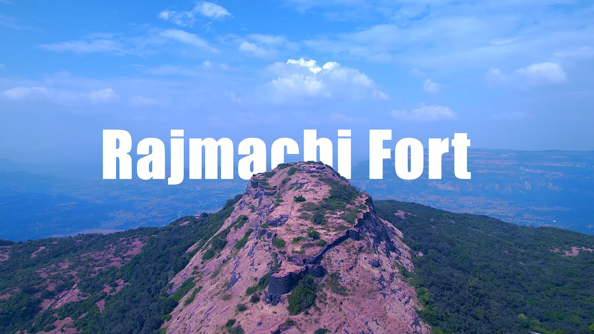

Lohagad Fort
Lohagad Fort is a historic fort near Lonavala, known for its scenic beauty and the iconic Vinchu Kata structure.
Learn MoreRajgad Fort
Rajgad Fort served as the capital of the Maratha Empire and is famous for its strategic location and architecture.
Learn More

Rajmachi Fort
Rajmachi Fort is a historic fort near Lonavala, known for its scenic beauty and trekking routes.
Learn More
Shivneri Fort
Shivneri Fort is the birthplace of Chhatrapati Shivaji Maharaj and is known for its historical significance.
Learn MorePurandar Fort
Purandar Fort is a historic site associated with Chhatrapati Shivaji Maharaj and offers stunning views of the region.
Learn More